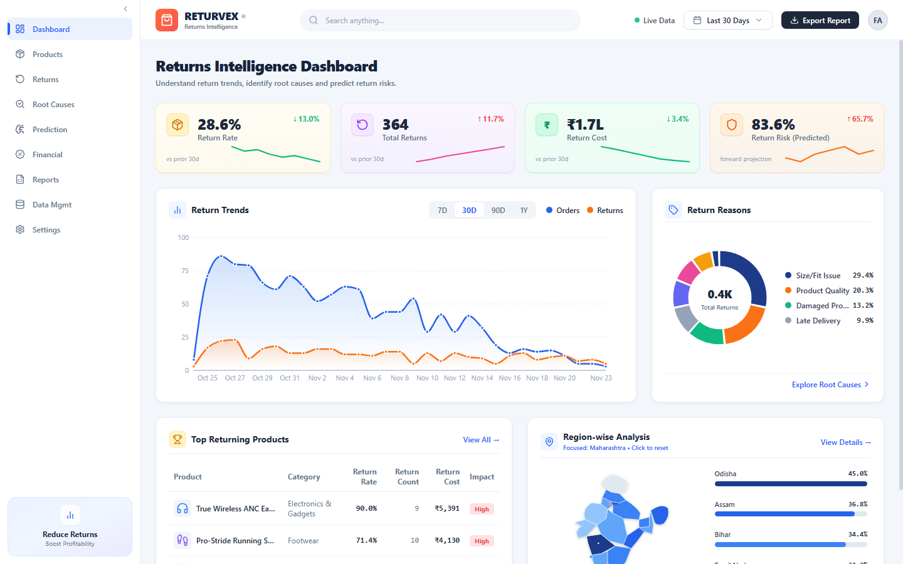

RETURVEX
RETURNS INTELLIGENCE.
A returns analytics platform helping e-commerce merchants recover lost margins — decomposing return rates by product category, isolating defect root causes, calculating reverse logistics costs, and scoring pre-dispatch risk.

RECOVERING MARGINS DRAINED BY E-COMMERCE RETURNS.
Product returns are an existential threat to online retail margins due to reverse freight, inspection labor, and depreciation. RETURVEX diagnoses why customers return items and predicts return risk before packages ship.
Executive Returns Dashboard
High-level overview tracking gross return rate, total return cost, recoverable margin, and month-over-month return volume.
Product SKU Diagnostics
Ranks catalog products by return frequency, sizing mismatch frequency, and supplier quality score to identify defective batches.
Root-Cause Decomposition
Categorizes return reasons into sizing mismatches, material flaws, inaccurate website photos, and shipping delays.
Reverse Logistics Financials
Quantifies true unit return economics including two-way shipping, warehouse grading labor, packaging loss, and liquidations.
Pre-Dispatch Risk Scorer
Machine learning classifier estimating return probability at checkout based on customer return history and cart composition.
Supplier Quality Auditing
Evaluates third-party manufacturing vendors to isolate which suppliers generate excess return rates.
HOW IT WORKS.
Local-first analytics workstation and pre-dispatch ML risk engine built with FastAPI and React 19.
Order Ingestion
Order and return transaction history parsed from merchant stores.
Cost Attribution
Computes reverse freight, handling, and depreciation expense.
Root-Cause Mining
NLP and classification group customer return reason comments.
Risk Prediction
Scikit-Learn model scores return probability before dispatch.
Actionable Alerts
Flags problematic SKUs for sizing chart revision or supplier review.
APPLICATION SCREENSHOTS.
Live screens captured from the running application. Click any image to view full size, or follow setup instructions in the GitHub repository.
RETURNS ANALYTICS SPECS & CAPABILITIES.
Key modules, rules, safety checks, and automated test results documented in the repository.
| Subsystem | Technical Implementation | Verified Capability |
|---|---|---|
| Financial Costing | Item-level reverse logistics attribution | Concealed return cost transparency |
| Predictive Modeling | Scikit-Learn Gradient Boosting Classifier | Pre-dispatch high-return order scoring |
| Catalog Diagnostics | SKU return rate vs category benchmark | Actionable sizing & quality defect flags |
| Test Coverage | Pytest automated integration test suite | 20 / 20 automated tests passed |
CORE TECHNOLOGIES.
Frameworks, databases, visualization tools, and testing libraries used in RETURVEX.
FUTURE ENHANCEMENTS.
Upcoming improvements planned for RETURVEX.
EXPLORE SOURCE & DOCS.
View the complete codebase, sample datasets, quick-launch scripts, and automated test suites on GitHub.